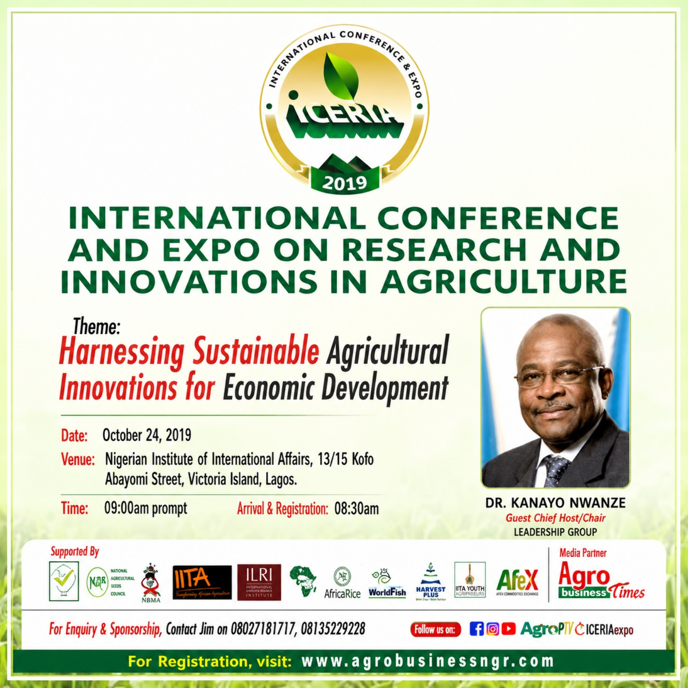

Owner • Convener • Promoter
EVERGREEN ICERIA
About ICERIA
The International Conference and Expo on Research and Innovations in Agriculture.
THE PLATFORM01LEGEND & GENIUS 02ICERIA 03ICERIA 2027
The enduring ICERIA platform
ICERIA is a conference and expo platform connecting agricultural research, innovation, policy, enterprise, investment, knowledge and practical application. Its purpose is to create a continuing space where research outcomes and innovations can be discussed, communicated, connected to enterprise and considered for practical application.
Evergreen conference and expo platform
Current edition
THE ICERIA JOURNEY
2019 → 2020 → 2027
2019 — Maiden Edition24 October 2019 • Nigerian Institute of International Affairs, Lagos. Theme: Harnessing Sustainable Agricultural Innovations for Economic Development.
2020 — Second Edition3 September 2020. Theme: Aggregating Sustainable Agricultural Innovations for Food Security.
2027 — Current Edition16 March 2027 • NIIA, Lagos. Theme: Catalysing commercialisation and adoption of research outcomes and innovations for food sufficiency and economic growth of Africa.
POSITIONING
Innovations for Sustainable Food Systems
ICERIA uses RESEARCH • INNOVATION • IMPACT as a supporting identity and focuses the current edition on the pathway from research to innovation, validation, commercialisation and adoption.
